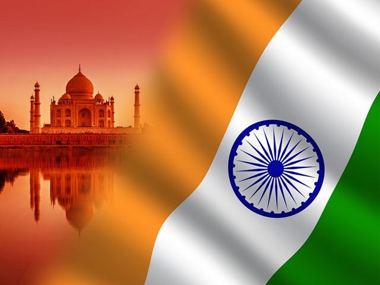

Indian Tourism
Haryana
Jammu and Kashmir
Maharashtra
UP
Rajasthan

- Haryana
Jammu and Kashmir
Maharashtra
Uttar Pradesh
Rajasthan
Topic1:Haryana
Topic1:Haryana
Haryana is a state in India located in the northern part of the country.
It was carved out of the former state of East Punjab on 1 November 1966 on
a linguistic basis. It is ranked 21st in terms of area, with less
than 1.4% (44,212 km2 or 17,070 sq mi) of India's land area.
Chandigarh is the state capital, Faridabad in National Capital Region
(NCR) is the most populous city of the state, and Gurgaon is a
leading financial hub of the NCR, with major Fortune 500 companies
located in it.[14] Haryana has 6 administrative divisions,
22 districts, 72 sub-divisions, 93 revenue tehsils, 50 sub-tehsils,
140 community development blocks, 154 cities and towns, 6,848 villages,
and 6,222 villages panchayats.
Topic2:Jammu and Kashmir
Jammu and Kahmir
Jammu and Kashmir is a region administered by India as a union territory and
consisting of the southern portion of the larger Kashmir region, which has been
the subject of a dispute between India and Pakistan since 1947, and between
India and China since 1962.The Line of Control separates Jammu and Kashmir from
the Pakistani-administered territories of Azad Kashmir and Gilgit-Baltistan
in the west and north. It lies to the north of the Indian states of Himachal
Pradesh and Punjab and to the west of Ladakh, which is also subject to the
dispute as a part of Kashmir, and administered by India as a union territory.

Topic3:Maharashtra
Topic3:Maharashtra
Maharashtra is a state in the western and central peninsular region of India
occupying a substantial portion of the Deccan Plateau. The centre of India is
in this state. Maharashtra is the second-most populous state in India as well
as the third-most populous country subdivision in the world. It was formed on
1 May 1960 by splitting the bilingual Bombay State, which had existed since
1956, into majority Marathi-speaking Maharashtra and Gujarati-speaking Gujarat.
Thus Maharashtra is a Marathi linguistic state. The state is divided into 6
divisions and 36 districts, with the state capital being Mumbai, also the most
populous urban area in India and Nagpur serving as the winter capital.
The Godavari and the Krishna are the two major rivers in the state.
Marathi is the most widely spoken language and is also the official language
of the state. The forest cover in the state is 16.47% of the state's
geographical area. Out of total cultivable land in Maharashtra about 60% land
is under food grain crops with Jowar (Sorghum bicolor) being the dominating crop.
Topic4:Uttar Pradesh
Topic4:Uttar Pradesh
Uttar Pradesh is a state in northern India. With over 200 million inhabitants,
it is the most populous state in India as well as the most populous country
subdivision in the world. It was created on 1 April 1937 as the United
Provinces of Agra and Oudh during British rule, and was renamed Uttar Pradesh
in 1950, giving it the acronym UP. The state is divided into 18 divisions and
75 districts, with the state capital being Lucknow, and Allahabad serving as
the judicial capital. On 9 November 2000, a new state, Uttaranchal
(now Uttarakhand), was carved from the state's Himalayan hill region. The two
major rivers of the state, the Ganges and Yamuna, join at Triveni Sangam in
Allahabad and flow further east as Ganges. Other prominent rivers are Gomti and
Saryu. The forest cover in the state is 6.1% of the state's geographical area.
The cultivable area is 82% of total geographical area and net area sown is
68.5% of cultivable area.
Topic5:Rajasthan
Topic5:Rajasthan
Rajasthan is a state located in northern India. The state covers an area of
342,239 square kilometres (132,139 sq mi) or 10.4 percent of the total
geographical area of India. It is the largest Indian state by area and the
seventh largest by population. Rajasthan is located on the northwestern side
of India, where it comprises most of the wide and inhospitable Thar Desert
(also known as the Great Indian Desert) and shares a border with the Pakistani
provinces of Punjab to the northwest and Sindh to the west, along the
Sutlej-Indus river valley. It is bordered by five other Indian states:
Punjab to the north; Haryana and Uttar Pradesh to the northeast; Madhya
Pradesh to the southeast; and Gujarat to the southwest. Its geographical
location is 23.3 to 30.12 North latitude and 69.30 to 78.17 East longitude,
with the Tropic of Cancer passing through the southernmost tip of the state.

Back to first page